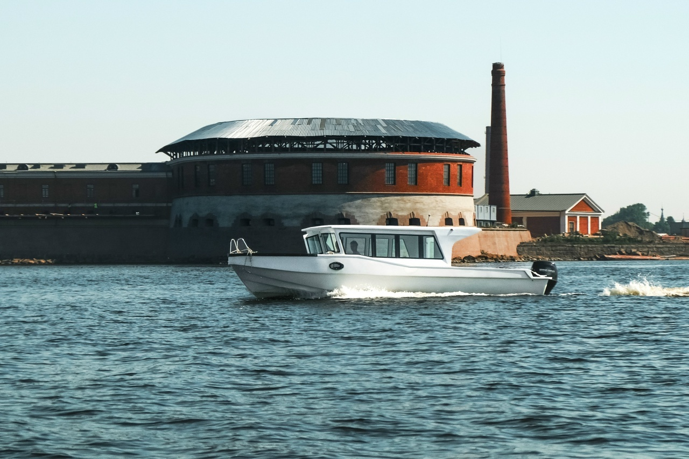
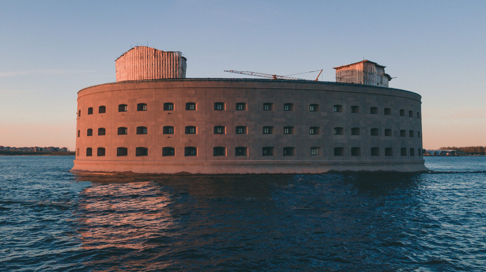
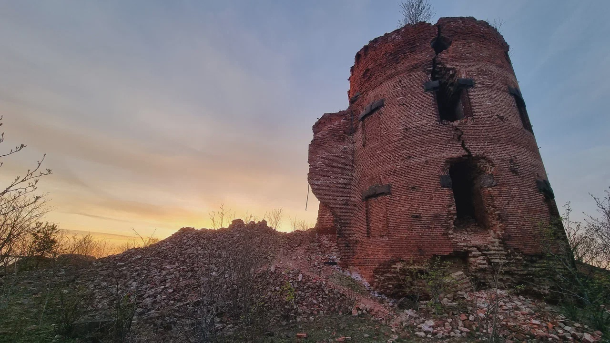
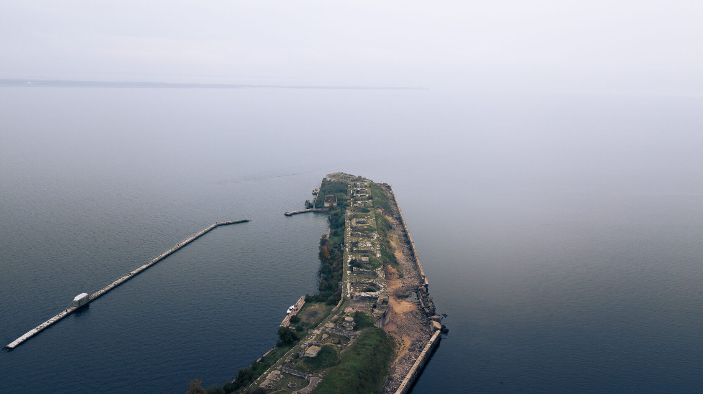
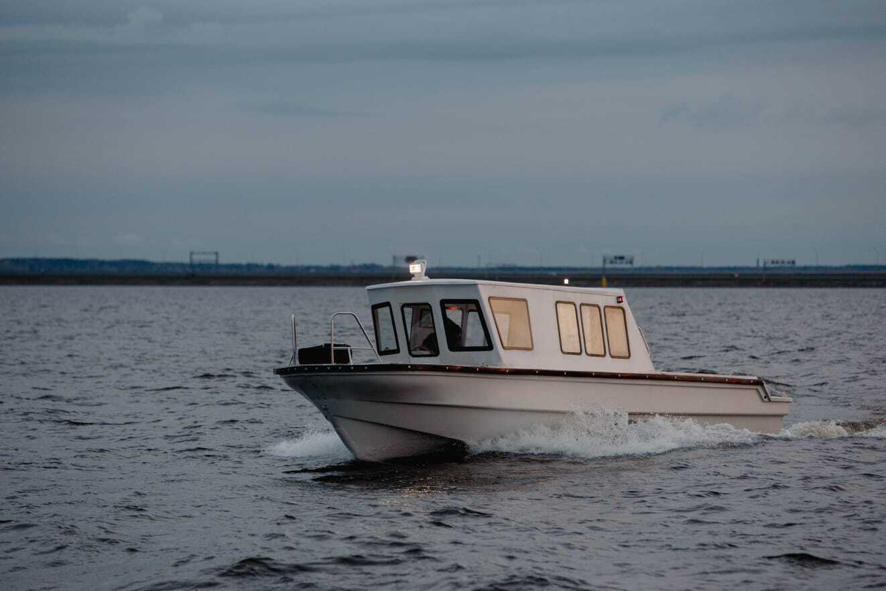
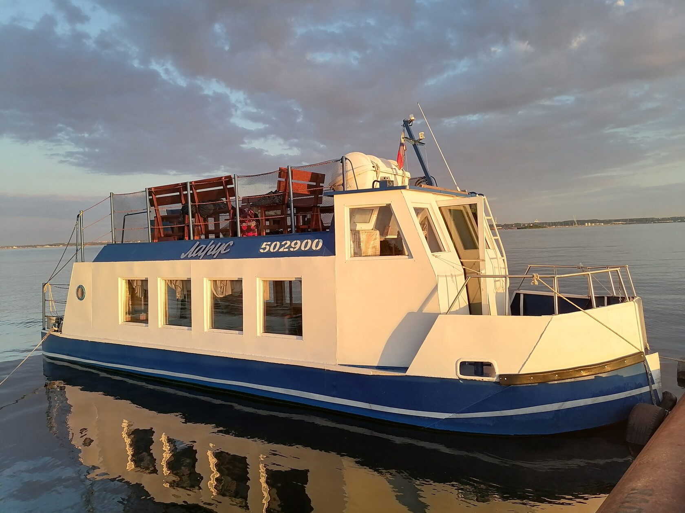
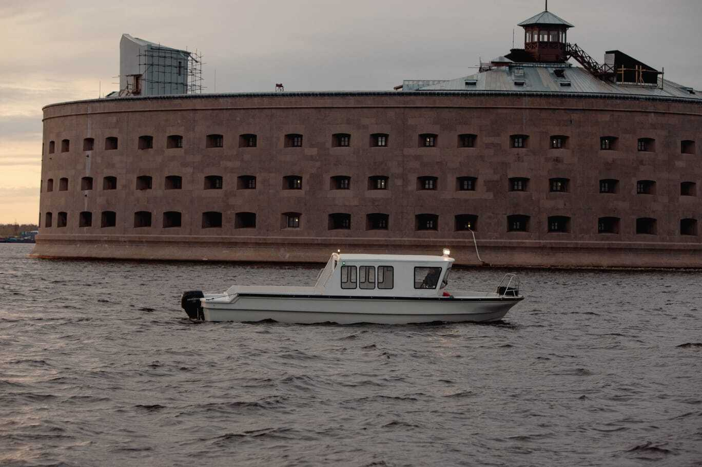
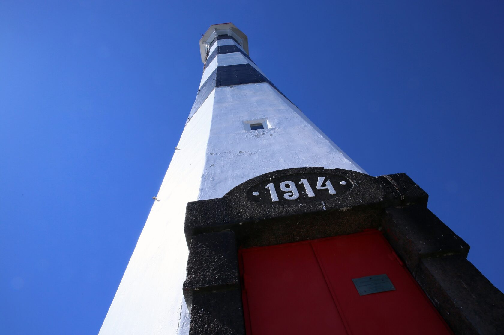
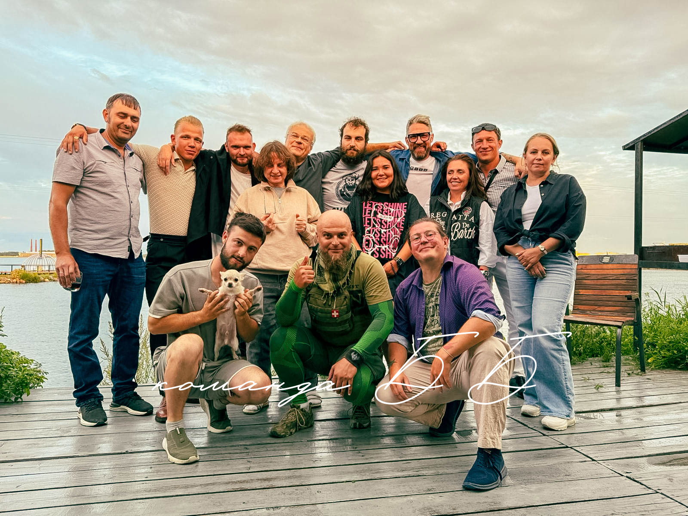
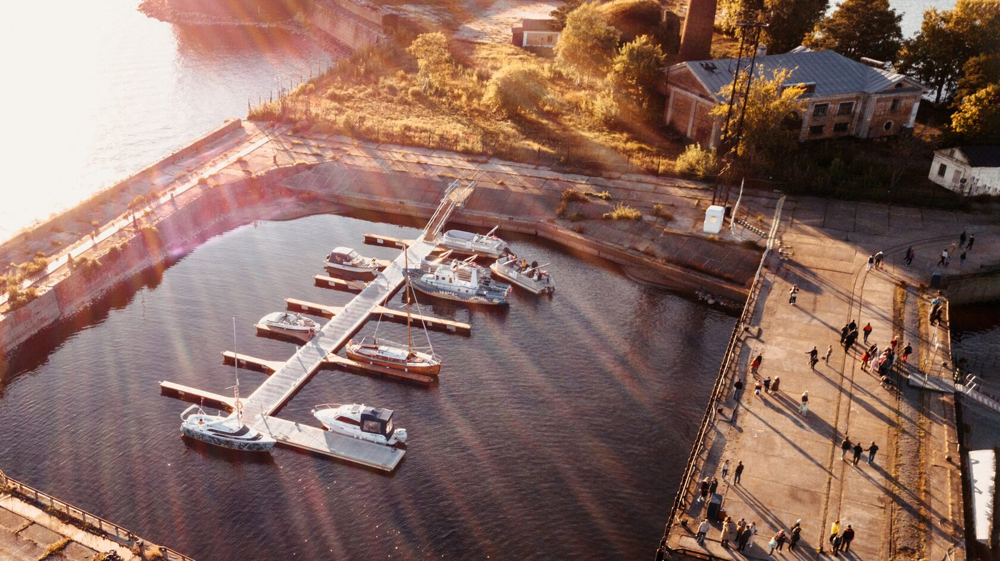

1–2,5 часапродолжительность

Авторские экскурсии на катерах
Форты
Кронштадта
с моря
Увидьте легендарные форты и маяки Финского залива с воды и высадитесь на островные крепости.
История
начинается
с воды ↙
От 1 900 ₽за человека
Высадкина форты и маяки
Крытые катеравсегда тепло и уютно
Безопасноопытные капитаны
Выберите своё приключение
Экскурсии по фортам
Кронштадта

1 часОбзорный маршрут
Знакомство
Форты Кронштадта с воды
Экспресс-знакомство с главными достопримечательностями морской крепости.
- 3 форта с воды
- Задний створный маяк

1,5 часаПопулярныйФорты и маяки
Приключение
Маршрут с высадкой
Золотая середина для первого путешествия по фортам Кронштадта.
- 4 объекта с воды
- Высадка на форт Павел I

2,5 часаБольшой тур
Экспедиция
Полное погружение в историю
Самый насыщенный маршрут для тех, кто хочет увидеть максимум.
- 5 объектов с воды
- Высадка на Павел I и Граф Милютин
Профессиональные капитаны
Опытные моряки и сертифицированные гиды
Безопасность
Спасательные жилеты и инструктаж на борту
Комфорт
Закрытая тёплая рубка и открытый кокпит
Можно с детьми
Подходит для семейного отдыха
В любую погоду
Маршрут корректируем ради комфорта
Индивидуальные прогулки
Ваше море.
Только ваша компания.
Выберите судно и отправляйтесь по собственному маршруту — к северным фортам, маяку Толбухин или навстречу закату.

До 11 гостей
Бодрый Первый
Закрытая рубка с хорошим обзором и просторный открытый кокпит. Катер создан для дальних морских маршрутов.
Просторный катер
Бодрый Второй
Больше пространства для компании и уверенный ход по Финскому заливу.

До 10 гостей
Теплоход Ларус
Панорамная верхняя палуба и просторный закрытый салон для любой погоды.
Кронштадтская крепость
Не декорации.
Живая история.
Форты строили почти два столетия. С воды понятен их настоящий масштаб, а на высадке история становится осязаемой.

01
Александр I
Самый известный и загадочный форт Кронштадтской крепости, прозванный Чумным.
02
Павел I
Когда-то самый мощный форт Кронштадта. Сегодня — романтичные руины с трагической историей.

03
Маяк 1914 года
45-метровый ориентир морского канала, к которому катер подходит почти вплотную.
04
Граф Милютин
Один из наиболее сохранившихся фортов: казармы, снарядные склады и артиллерийские позиции.
Высадиться на большом маршруте →Говорят путешественники
Час проходит
как одна волна
«Это было прекрасно: вечернее розовое небо, брызги волн, мрачные величественные форты. Мы узнали много интересного и необычного о Кронштадте и его истории».
«Рассказ последовательный, интересный, с юмором. Узнали много нового. Поездка по воде на малом катере — отдельное приключение. Посетили форт Милютин и поднялись на маяк».
«Более интересного рассказа об истории ещё не слышали. Час пролетел незаметно: прокатились с ветерком, посмеялись от души и получили массу эмоций».
1 / 3

Кто будет на борту
Моряки,
которые умеют рассказывать
Мы организуем экскурсию и следим, чтобы от первой встречи до возвращения в гавань у вас оставались только великолепные впечатления.
Точка отправления
Тихая гавань
у форта Пётр I
Здесь вас встретит гид-капитан и проводит к катеру. От парка «Остров фортов» до гавани — около 15 минут неспешным шагом.
Кронштадт, территория форта «Пётр I»
Море ближе, чем кажется
Выберите маршрут.
Остальное — на нас.
Забронировать экскурсию →
Нужна помощь с выбором?
+7 (963) 324-66-27